{kind=link}
1985-1986
A SUBCULTURE EMERGES
A grassroots community establishes across the Pacific Northwest. Members of groups like The Melvins and Green River play DIY basement shows in rotating lineups. United by boredom and geographic isolation, they collectively begin creating music the blends punk and heavy metal into a unique regional sound.

1987
THE LUBMBERJACK AESTHETIC
Bands like Tad, whose fashion consisted of layered flannels and work boots, represent the working-class of the Pacific Northwest, primarily lumberjacks, whose fashion choices were made for practical reasons such as staying warm in the damp Seattle climate.
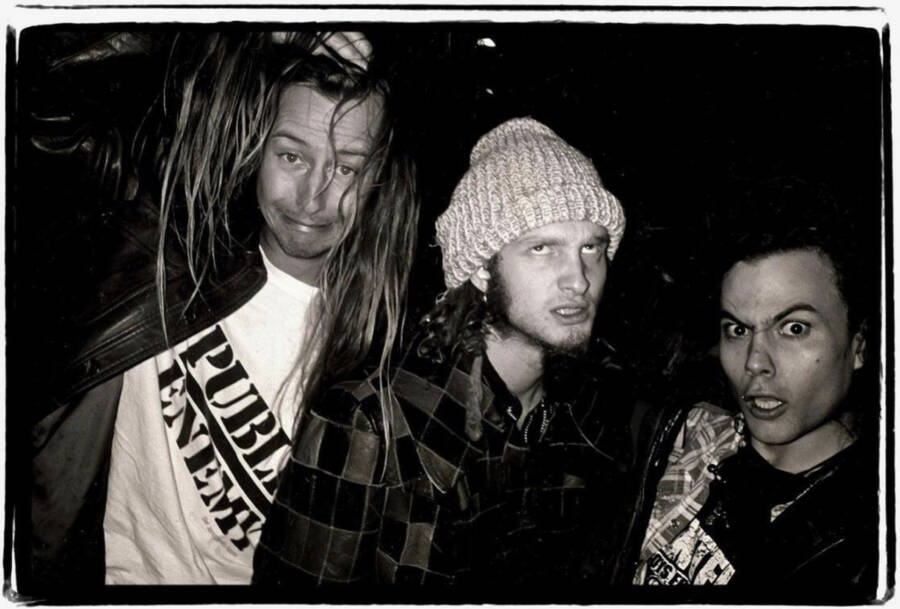
1988
Sub Pop FROMS A RECORD LABEL
Bruce Pavitt and Jonathan Poneman incorporate their popular music zine, Sub Pop, and launch it as an independent label, with the intent to capitalize on Seattle’s thriving underground scene. Their strategy entailed manufacturing the scene into a cohesive "Seattle sound" with the help of producer Jack Endino and photographer, Charles Peterson.
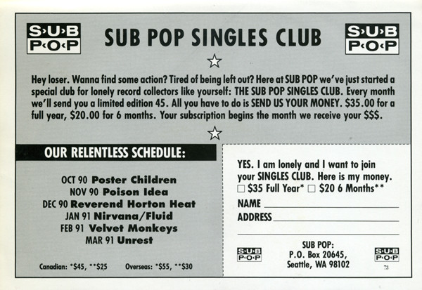
1988-1989
SUBCULTURE continues to develop
Operating under the belief that major labels would never visit their isolated, working-class city, the grunge subculture continued to plays in basements and small clubs, while recording albums under the Sub Pop label and building the Seattle sound.
1989
All eyes turn to Seattle's Music Scene
SubPop expands their marketing propoganda campaign by flying British journalist Everett True to Seattle. His raving and sensationalized reviews in England spark an international media frenzy, attracting global attention onto the Seattle music scene.
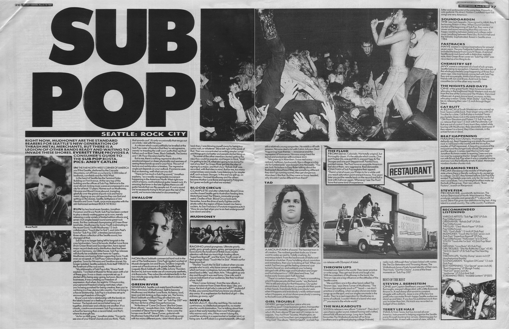
1990
Grunge fashion gains traction
Grunge musicains like Kurt Cobain (Nirvana) and Mia Zapata (The Gits) mock conventional beauty standards and gender performances through fashion. Characterized by androgynous clothing, the grunge fashion aesthetic begins spreading through mass media outlets like mainstream magazines and MTV.
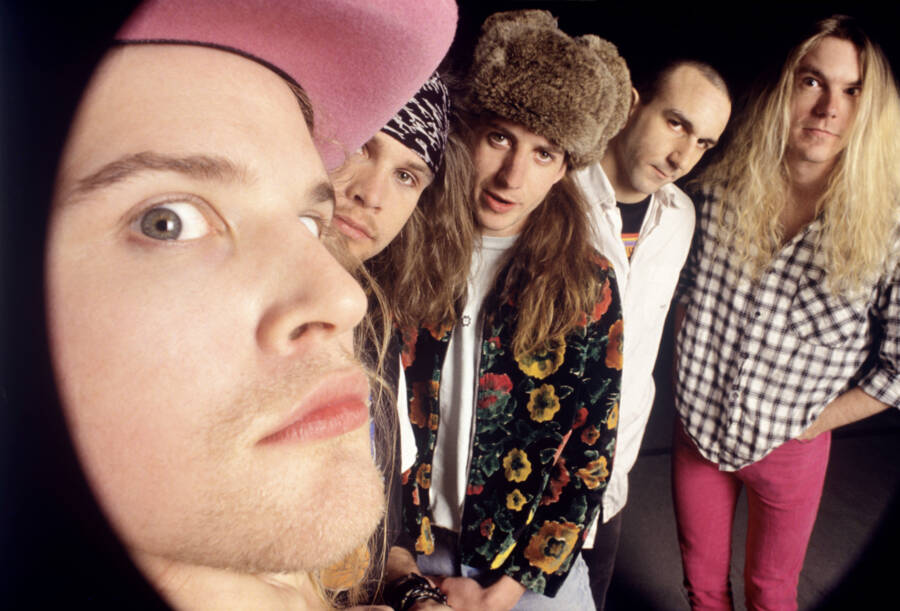
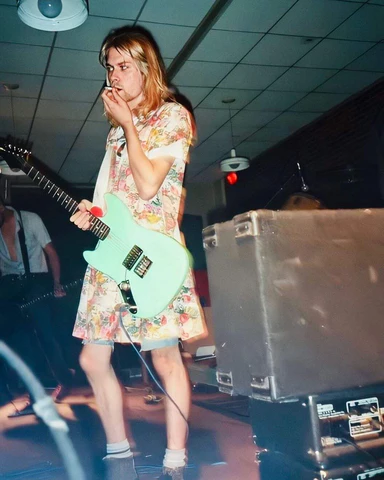
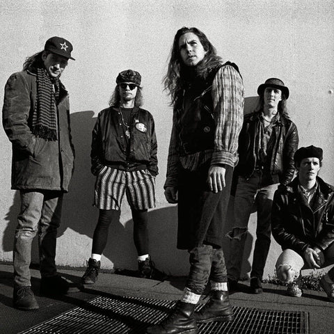
1991
Big dumb baby huey sits on seattle
The massive success of Nirvana’s Nevermind and Pearl Jam’s Ten causes corporate labels to flood Seattle, diluting the authentic sound with more conventional and marketable rock melodies. Grunge musican, Steve Fisk, described the invasion as a “big, dumb, baby huey” that waddled into Seattle and squashed the music scene.
1992
The LEXICON of GRUNGE
The New York Times published a list of fake slang provided by a Sub Pop employee, who frustrated with the influx of media attention, created the list as a prank.
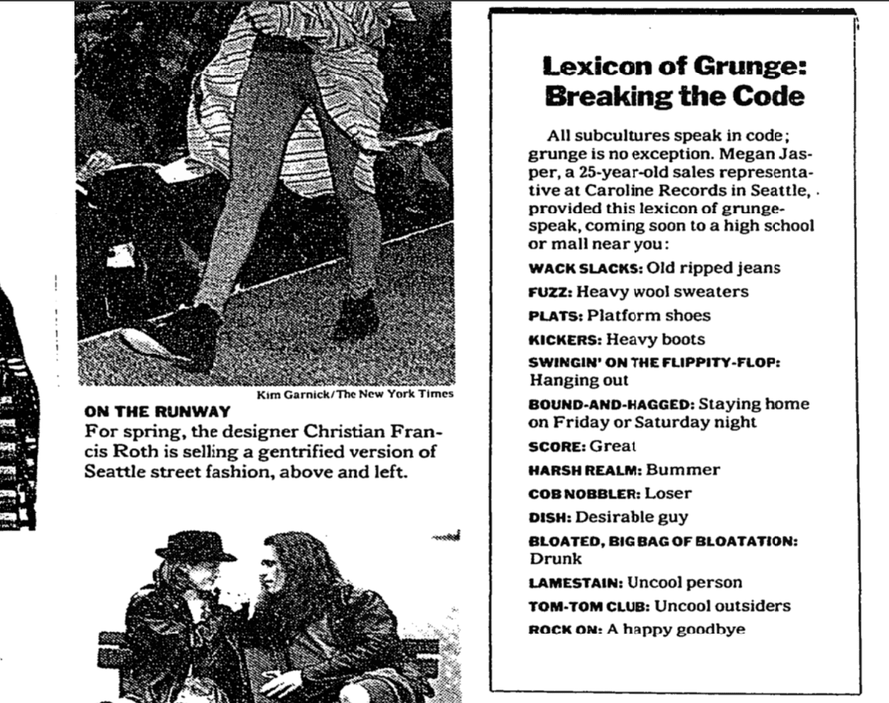
1992
HOLLYWOOD GETS IN ON GRUNGE
Cameron Crowe's film, Singles, and its high-charting soundtrack added to the romanticized portrayal of the Seattle scene for a cinematic audience. The film shot was shot in authentic Seattle locations and cast grunge music icons as background extras.
Retailers and corporations also start introducing grunge-inspired fashion and merchandise, further commercializing the subculture.
1992-1993
high fashion appropriates working class culture
The transition from rebellious youth subculture to a marketable, pop-culture trend was completed when Marc Jacobs sent supermodels down the runway in luxury grunge at New York Fashion Week.
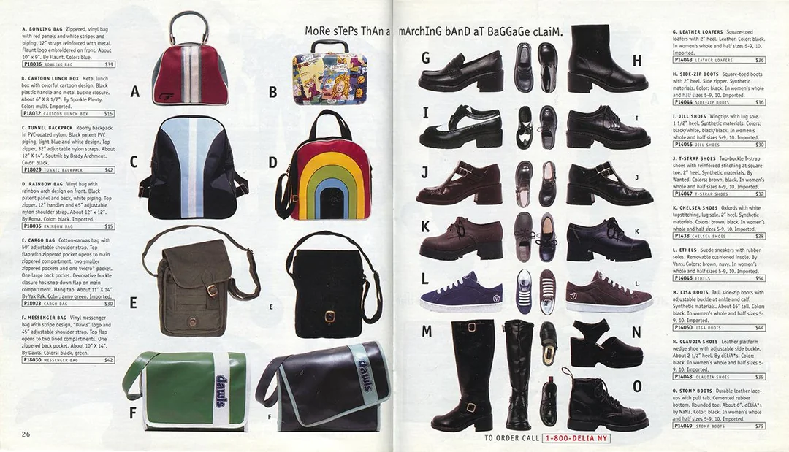
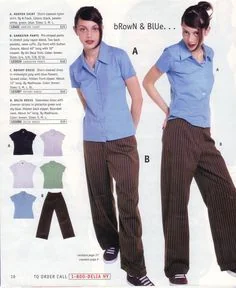
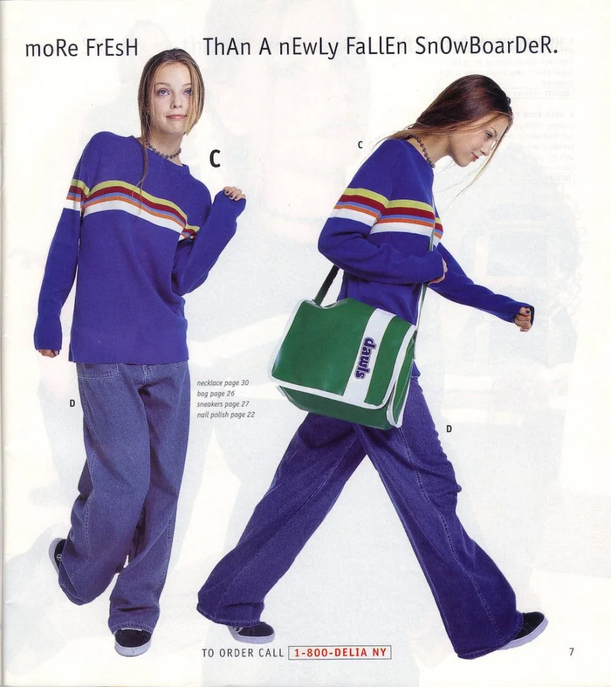
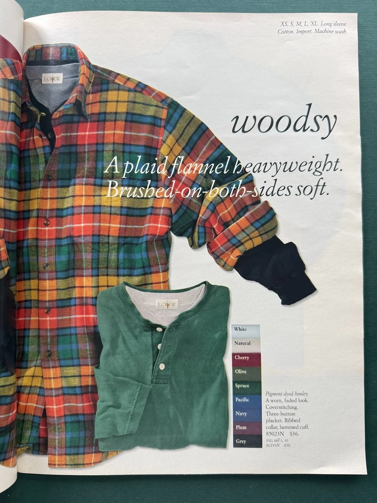
1994
THE GRUNGE MOVEMENT REACHES A BREAKING POINT
Voices like Eddie Vedder's warn that "youth is being sold and exploited," reflecting the subculture's loss of radical power as its aesthetic becomes a global retail commodity.
Following Kurt Cobain’s death, major labels shifted focus to Post-Grunge bands like Bush who mimicked the Seattle sound without the rebellious subtext. Grunge, as an original subculture, is left to the wayside, marking the end of the once radical subculture and paving the way for a more commercialized version of the genre without all the social critique.